Abertura e Fechamento de Caixa
Login no sistema
1º Dê um duplo clique no ícone do Frente de Caixa na área de trabalho do PDV
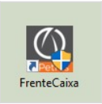2º Após abrir o Frente de Caixa, selecione na tela inicial o botão LOGIN (CTRL + L)
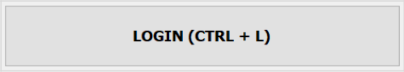3º Escolha o seu NOME na lista de usuários, DIGITE A SENHA e selecione o botão F2 – OK.
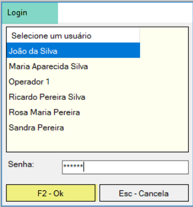Abertura do Caixa
4º Na tela inicial do Frente de Caixa selecione o botão ABRIR MOVIMENTO (CTRL + A).
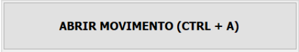5º O sistema pergunta se deseja abrir o movimento. Clique na opção Sim da mensagem.
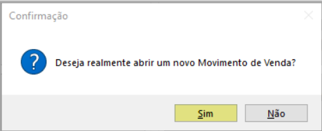Fechamento de Caixa
Encerradas as atividades no Frente de Caixa e finalizada a jornada de trabalho, o atendente deve Fechar o Movimento de Venda para que sejam feitas as conferencias dos valores recebidos e das operaçoes realizadas durante o dia ou turno.
Na tela inicial do Frente de Caixa selecione o botao FECHAR MOVIMENTO (CTRL + A)
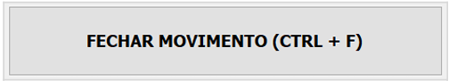O sistema exibe mensagem de confirmaçao e pergunta de deseja imprimir o relatorio gerencial do fechamento. Selecione Sim.
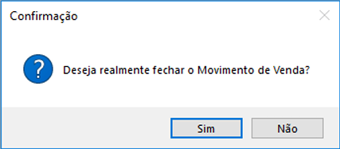Em seguida o sistema mostra a janela Relatorio de Vendas e voce tem a opçao de imprimir ou nao.
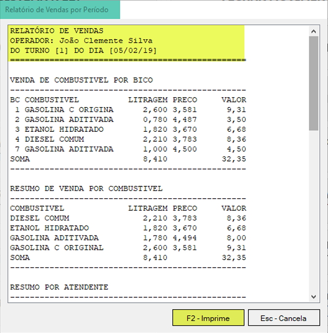Registro do Suprimento
O SUPRIMENTO é o ato de depositar dinheiro no caixa do atendente para compor o fundo de caixa para troco ou para o fornecimento de adiantamentos a clientes e vales aos funcionários.
Há duas situações possíveis para registrar o SUPRIMENTO no Frente de Caixa.
1. Suprimento na abertura do caixa: é opcional e pré-definido no Retaguarda;
2. Suprimento no caixa aberto: o caixa está aberto e falta fundo para troco/adiantamento
de cliente/vales funcionários
Suprimento na Abertura do Caixa
Ao abrir o movimento o sistema mostra a janela Registrar Suprimento. Se desejar
registrar neste momento então digite os campos Valor e Observação e pressione o botão F2 – OK.
Se não desejar registrar, pressione o botão Esc – Cancela
O sistema exibe mensagem de confirmação e imprime o comprovante do SUPRIMENTO indicando o valor, a data, o turno e o nome do atendente.
Suprimento no Caixa Aberto
Se no decorrer do turno aberto houver a necessidade de registrar um SUPRIMENTO, volte a tela inicial do Frente de Caixa e selecione o botão REGISTRAR SUPRIMENTO (CTRL + S).
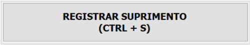Na janela Registrar Suprimento digite os campos Valor e Observação e pressione o botão F2 – OK para confirmar.
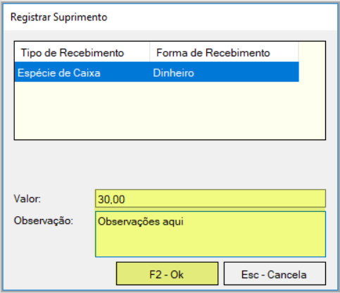O sistema exibe mensagem de confirmação e imprime o comprovante do SUPRIMENTO indicando o valor, a data, o turno e o nome do atendente.
Registro de Sangria
A SANGRIA e o ato de retirar especie do caixa a partir das vendas recebidas e tambem dos
adiantamentos recebidos de clientes,
que tem a finalidade de conferir segurança para os caixas
da empresa, evitando que o atendente acumule grandes somas de dinheiro.
Ha duas situaçoes possíveis para registrar a SANGRIA no Frente de Caixa.
Sao elas:
Sangria no caixa aberto: o caixa esta aberto e ja acumula uma grande soma de dinheiro recebido das vendas/adiantamento de cliente;
Sangria no fechamento do caixa: e opcional e pre-definido no Retaguarda.
Sangria no Caixa Aberto
Se no decorrer do turno aberto houver a necessidade de registrar uma SANGRIA, volte na tela inicial do Frente de Caixa e selecione o botao REGISTRAR SANGRIA (CTRL + G).
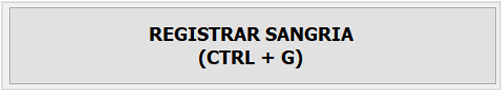Na janela Registrar Sangria digite os campos Valor e Observação e pressione o botao F2 OK para confirmar.
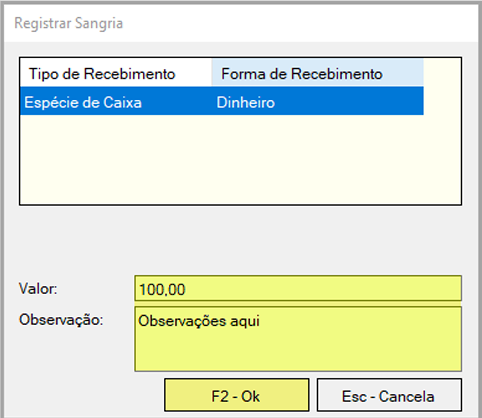O sistema exibe mensagem de confirmaçao e imprime o comprovante da SANGRIA indicando o valor, a data, o turno e o nome do atendente.
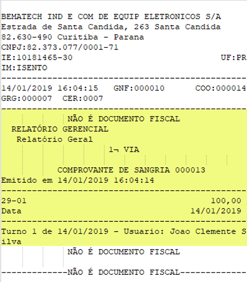Sangria no Fechamento do Caixa
Ao FECHAR o movimento o sistema mostra a janela Registrar Sangria. Se desejar registrar neste momento entao digite os campos Valor e Observação e pressione o botao F2 – OK. Se nao desejar registrar, pressione o botao Esc – Cancela.
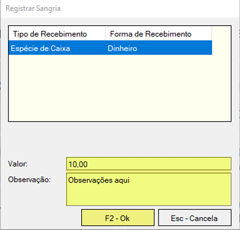O sistema exibe mensagem de confirmaçao e imprime o comprovante da SANGRIA indicando o valor, a data, o turno e o nome do atendente.
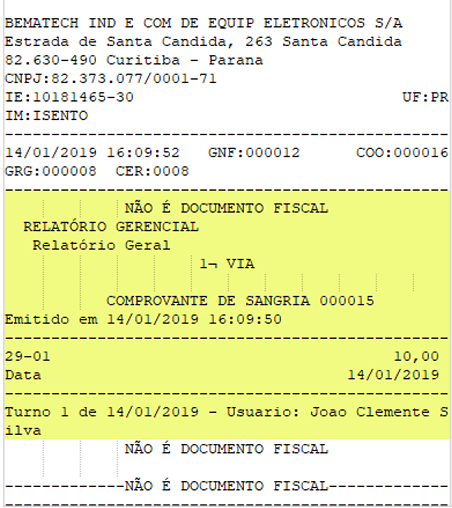